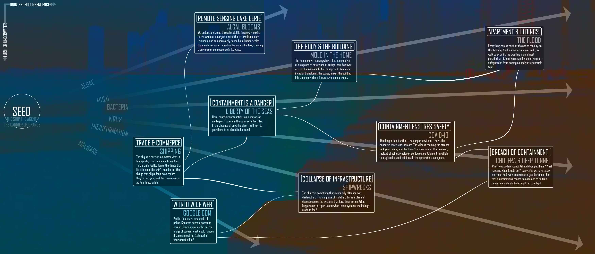
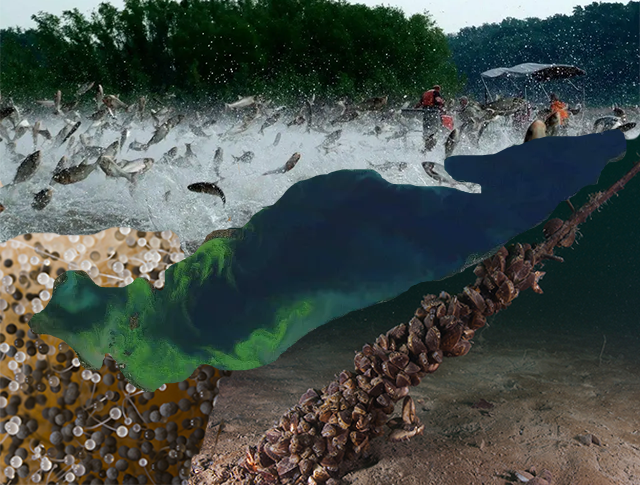
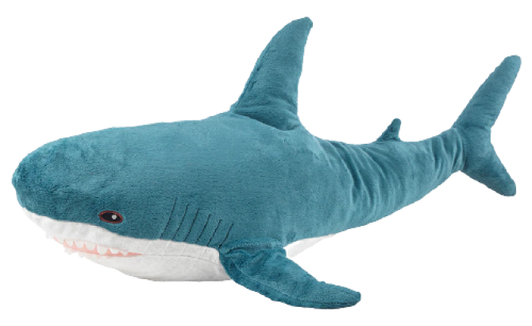

SO WHAT'S GOING ON?
Our wireframe diagram - each discrete section calls to a different incident or aspect of spread, but every one relates to the others travelling across as well as out.
the theology of spread
Something is spreading. Something is growing. Something is slipping the bounds set upon it.
Water and the internet come as a pair in our theology of spread: mechanisms of flow, transporters, carriers. Water/”The Web” is that through which ideas, people, and frameworks are connected and shifted and changed. Water/Web do not solely exist as carriers for other things, but rather contain their own self-sustaining lives and ecosystems. That said, our avenue of investigation is that of negative space: coming to know Water/Web by first finding out what it is not.
On the Water/Web, things are carried from Point A to Point B. What happens at Point B? A linkage. The flow (spread) of information. However, we cannot look at the ¾ Coast and global information systems as separate manifestations of this phenomenon of spread: rather, we show them here as inextricably interconnected systems of transportation. Ripples at one, the tsunami coming home to roost at the other. And vice versa. As before: on the Water/Web, things are carried from Point A to Point B. What happens at Point C? Point C is something that is generated in the linkage of ideas, of the world wide web and of the waters that connect us. It is the damp basement under sunny skies after the storm – a space that is made anew, that becomes a different place without any change in its spatial orientations. Here we investigate mold, and mildew, and what grows in dark corners. The temporal scale of this investigation becomes relevant as a simultaneously generative and degenerative force. There is a simultaneous creation and destruction inherent in mold and all things spreading and growing. Climbing its way through the damp boards of the building, creating itself, creating its environment, destroying ‘the building as it existed for humans’, creating ‘the building in its present state’: mold becomes a shaper of worlds, its very presence destroying the use-case that existed for the building before its arrival. At the same time, mold (or misinformation, which acts as nearly the same thing) cannot be solely a destruction of other things. It creates, if nothing else, itself; an act of creation that cannot be overlooked.
mold, algae, dead zones, damp
The top portion of the scenographic map hopes to analyze the destructive power of mold and algae.
For algae, I looked at harmful algal blooms in Lake Erie. There are a variety of causes of algal blooms, including agricultural runoff and the introduction of invasive species due to the Great Lakes being used for the transit of carrier ships. Algal blooms occur because these processes lead to excess nutrients like phosphorus and nitrogen in the water; shifting conditions in the Great Lakes since the 1920s have led to harmful algal blooms flourishing and spreading across the bodies of water (Egan, 316). In particular, Lake Erie has had a large amount of harmful algal blooms. Harmful algal blooms create dead zones in the water by creating conditions where other species can’t get dissolved oxygen; thus, native species in the lakes continue to decrease. In addition, algae blooms release toxins that can harm human health, causing breathing problems and making both fish in the water and the water itself unsafe to consume, which is described at length in Chapter 7 of Dan Egan’s The Death and Life of the Great Lakes.
Similarly, mold thrives under damp conditions. Many apartments in Chicago are susceptible to flooding. Older apartments that are rented are particularly at risk for flood damage not being properly addressed. Thus, mold frequently arises as a form of unintended spread. For individuals with asthma or allergies to mold spores, this can lead to long-term respiratory issues. Michelle Murphy’s Sick Building Syndrome and the Problem of Uncertainty situates these issues as contained in buildings; issues with ventilation and humidity management can lead to not only growths of mold but also situations like the 1976 death of 29 people in a Philadelphia hotel due to Legionnaires disease (Murphy, 138). She notes that some office buildings work to address mold and other environmental hazards, as it risks the productivity of their workers, but apartments are often forgotten. Thus, it is worth analyzing mold exposure in apartments as a health equity issue, particularly as climate change causes adverse weather events like floods to become more common. One of our apartments is featured in some portions of the right-hand side of the image, as mold is currently being addressed in a bathroom. Mold is everywhere, but when it spreads to the contained spaces where we live, it can have unique consequences.
We look at mold through this destructive, harmful lens, but it is worth noting that the spread of mold also plays a key role in regulating ecosystems. Similarly, algae, in moderation, can play an important ecological role. In a discussion on the plastisphere, Max Liboiron discusses the fact that “tiny plastic pieces are home to plants, algae, and bacteria, the animals that feed on them, the predators that feed on these, and other organisms that establish synergistic relationships” (Liboiron, 104). They invite readers to consider ethical questions related to this; even if something like the spread of plastic seems unnatural and has some negative externalities, is it ethical to get rid of the plastics if there are thriving ecological systems attached to it? Thus, although we are analyzing parallels in dysregulation, we invite viewers to consider other interpretations of the images.
bacteria, virus, containment, overload
The two protagonists of bacteria and virus have similar manifestations: diseases of the body, from inside and out. We investigate them here not from the principles of spread but from its opposite: containment. To call containment the opposite of spread, though, is a little bit of a fallacy: it may be more accurate in this instance to call it spread’s complement, as we look at the two perspectives of ‘containment as insulation from danger’ and ‘containment as danger’. For the former, we investigate through the case study of the cruise ship Liberty of the Seas, which was the site of a Legionnaires disease outbreak in 2009 that resulted in a fatality. The images I use in this section are of air conditioning, infrastructure, control – places where bacteria most like to congregate and grow. In addition to this, we see the image of the lungs themselves afflicted with disease, all packed into the shape of Liberty. In this confinement, the space becomes synonymous with the body. It becomes, along with the body, a site of peril.
Virus, however, turns this relationship on its head. In our most recent collective experience, containment and COVID-safety have become nearly synonymous: stay safe, stay home, save lives. The body becomes a pure entity, which must be protected from the danger (which is outside). In both the case of virus and bacteria, the body is contained: the only difference that causes these underlying shift of priorities is whether the danger is contained along with it. In this section, though, I wanted to emphasize spread not just as a quasi-mathematical exponential expansion but as an organic mechanism. As things spread, they ebb and low – they expand with greater or lesser intensity – sometimes they even retreat. To emphasize this point, we see a masked figure: she is a county hospital nurse in 1918, protecting herself from the influenza epidemic. History never repeats, but it does rhyme – almost evoking the work of Joy Harjo, an understanding of time that is ultimately not cyclical but rather spiraling. Each point, each event, each map holds itself in reference to every other point and event and map.
There is one more case of containment. We have talked about containment with the body and the danger, and containment with the body (without the danger, which is outside the enclosure). But there is also containment of the danger, where the body remains outside. And in order to talk about that, we have to talk about Deep Tunnel. Like a subterranean infernal reflection of the Chicago River, it winds its hundred-mile length through Chicago and its suburbs, all the runoff we don’t want to see sat nicely under our feet. From its very inception, Deep Tunnel has been an interesting case study in spread and containment. When the MWRD (then the Metropolitan Sanitary District) first began to build public support for its flood control projects, it relied (albeit accidentally) on twin mechanisms of spread–disease and misinformation–by citing the 1885 cholera epidemic caused by heavy flooding that killed 90,000 people, which as it happens is an urban myth with little to no basis in reality (Chicago Tribune). MWRD used spread to create its opposite (or complement) building a nightmarish marvel of engineering underneath Chicago: a megasewer of nearly unheard-of proportions. It is, however, not enough. The container, a rigid object, proves insufficient to handle not just volumes of water, but water (ebbing, flowing) as organic spread. When the water rises high on waves of discard and fecal matter, with the creation of waves (motion, ecosystem) inside of this enclosed space, the container can only prove to be insufficient. In 1986, a geyser erupting out of the street lifted a woman’s car into the air – escaping from containment, spreading into the outside world (Henry Grabar, Slate.com). Chicago, however, continues to improve Deep Tunnel, and by 2029 perhaps will be able to fit the ocean inside of a bottle.
malware, misinformation, fiber optic cables
The protagonists of malware and misinformation are unique in that they are agents of an intangible spread. While we see that our other protagonists are visible and can be perceived in a physical manner, malware and misinformation are invisible. We only witness the consequences of their spread. In relation to the other protagonists, these are underwater, representing their hidden nature and their relationship to fiber optic cables. We start with the ship, an agent of both containment and spread. This ship does as ships are occasionally wont to do and sinks. The collage representing this contains spatial data relating to the location of many of these wrecks, many of which occurred right off the coast. It includes an image of “the world’s largest pleasure boat”, the Pere Marquette 18, that sank in 1910. The cases of ships sinking are fascinating and serve as a warning for anyone who dares sail the Great Lakes. The Great Lakes have claimed many ships over the years, with an estimated 6,000 shipwrecks beneath the surface, some going back as far as the 1600s. Shipwrecks, in this case, represent this collapse in infrastructure that plagues the deep sea. They are isolated and dark, old remnants failed by the systems meant to keep them running, with many explored and surveyed and many others disappearing, never to be seen again.
This brings forth the next set of images. We have entered an era of research and information sharing. Remote sensing is a common method of gathering data, and it is quite often used within the Great Lakes to understand what is happening beneath the dark surface. Because shipwrecks are difficult to track down, remote sensing often works to help in the search to gather data and understanding about the fate of a ship. This desire to find answers and reveal information is everywhere and does not exist simply to discover shipwrecks. In fact, there is a lot of research being conducted in the Great Lakes. Images of some of the objects of interest make up this next collage. The zebra mussel, a harmful species that was introduced to the lakes in the last century, plagues researchers and environmental activists. Algal blooms too have been receiving attention and calls for research to prevent their harmful impact on the environment. Even cholera, a disease that has plagued human populations for centuries, has been the subject of research, and was even the subject of great debate when it was discovered that a cholera outbreak that killed thousands of people in Chicago thought to have occurred in the 1880s had never actually happened. This spread of misinformation that occurred as far back as the 1950s is interesting in the light of new technology that helps spread information at incomprehensible speeds.
It is difficult to contain the spread of information once it has started. The final set of images in this underwater sequence relates to the spread of misinformation and malware through fiber optic cables. Fiber optic cables have enabled the spread of information at a much faster rate than had been allowed before. While a map representing where all the fiber optic cables in the world are is present, only one is relevant. That is the Crosslake fiber optic cable, which began operations in 2019 and spans between Toronto, Canada, and Buffalo, United States. The final leg of this geo-story circles back to ships and shipwrecks. With the increase and spread in malware attacks as time has passed, we have begun to see ships be targeted. Their increased reliance on technical systems has led to multiple malware attacks around the world in the recent past, with the worst one occurring against Maersk, a Danish company, in 2017. With malware attacks shutting down systems on ships, we may begin to see an increase in sunk ships in the future as hackers continue to work. This geo-story is one that represents a cycle, seeing both the benefits of faster spread and the consequences we may have to begin to consider in the future.
point of life
Our Point of Life drawing uses a submarine fiber optic cable as a sensing body. Unfathomable amounts of information travel across these cables; you are likely reading this transmission now because of them! The cross-section of a cable shows several circles nestled within; we used these circles to feature the narratives that we present in our scenographic map. Smaller circles were used to represent broader themes of the piece, which were informed by our original point of life drawings. We decided to focus on health and the impact of humans on environmental processes, which we represent with images of chest x-rays and hands touching algae.
Point of Life drawings lend themselves to potentially unexpected connections; having images of algae closer to the images of malware and misinformation allows one to consider the cyberbiosecurity concerns of closely monitoring algae, a topic discussed by researchers such as Schmale et al. in "Perspectives on Harmful Algal Blooms (HABs) and the Cyberbiosecurity of Freshwater Systems." Overall, we hoped to have our updated Point of Life drawing bring in different elements from our process work, including the aesthetic of our initial concept map and themes from our original works, which we believe to be a success.
additional drawings
This drawing comes as a collage of the protagonists and different agents in mold and algae.
An aerial view of algal blooms is at the center of the drawing, showing the high volumes of algae that plague the lakes and harm the existing ecosystem. Zebra mussels, another invasive species that was discovered in the lakes in the 1980s, are also abundant in the lakes, which continues to harm the existing species. Asian carp also make an appearance due to their propensity to invade, and though they have not yet become a large issue in the Great Lakes, there are ongoing efforts to stop a potential invasion. This spread of harmful agents in the Great Lakes has been difficult to manage and scientists continue to conduct research to mitigate the problems. Mold, another agent that hides itself in dark, damp corners and spreads when left alone, is also seen as part of the collage.
Our next drawing shows the full map of shipwrecks off of the coast of the Great Lakes. While it is merely a small snippet of the first collage that represents shipwrecks and the collapse in infrastructure, it was originally intended to show the full scope of shipwrecks across the Great Lakes. With an estimated 6,000 wrecks littering the bottom of the lakes, it illustrates the spread of these wrecks across all the lakes. Many of these wrecks occurred right off the coast or near the coast, and they outline the lakes in an interesting manner. Shipwrecks are intended to show the collapse of infrastructure, as well as the rising consequences of spread as malware attacks and misinformation become increasingly more common.

The third drawing is another collage that represents a cholera outbreak in Chicago that was actually discovered to be a myth, and portrays the protagonists of bacteria, virus, and misinformation. It was believed that thousands of people died in the 1880s from cholera and typhoid, but this was debunked upon investigating death tolls and causes from that decade. It is unknown why this myth began circulating, but there were real cholera outbreaks that occurred in Chicago up until the 1860s, so it is believed that the myth stemmed from these earlier outbreaks. This myth represents how widespread misinformation can be, and that the spread of a myth such as this can persist for decades, despite facts stating otherwise.
soundscape: notes
We understand spread as a multi-media, multi-sensory unbound spectrum of phenomena. Our history of spread leaves the bounds of visual data in order to investigate communication: how we communicate, and why, and the existence of communication we are not privy to. We begin our map with Ana Roxanne's 'It's A Rainy Day On The Cosmic Shore' - a human song, for us and by us. As we click through the listening options on the corner of the screen, SHALLOWER and DEEPER, we move away from human realms. We move further underwater, further afield. Our 'shallowest' sound is a collection of dolphin calls, creatures who - though aquatic - are nonetheless surface-dwelling. But moving down, we encounter the fin whale (whose voice has been sped up ten times to make it intelligible to humans), down and down and ending with the sperm whale three thousand meters deep.

citations and attributions
Most broadly, mold, algae, point of life, and general masterminding brought to you by Meghan; bacteria, virus, wireframe, soundscape, & web design brought to you by Sam; malware, misinformation, and additional drawings brought to you by Kimberly.
meghan
6109 S Greenwood Ave. Apartments.com. n.d. https://www.apartments.com/6109-s-greenwood-ave-chicago-il/qhxv3tx/.
"Algae Threatens 320,000 People in Anhui." China.org.cn. Last modified 2008. https://www.china.org.cn/environment/news/2008-05/05/content_15061424.htm.
Anderson, Thomas. "Jesus Fucking Christ (Today my girlfriend discovered mold in our closet)." Flickr. Last modified December 3, 2009. https://www.flickr.com/photos/senoranderson/4156168701.
Carrillo Rivera, Kimberly. “2 Photos of Apartment.” 2022.
Chicago Metropolitan Agency for Planning. "Flood Susceptibility Index." ArcGIS Online. Last modified 2017. https://uchicago.maps.arcgis.com/home/item.html?id=5372c70e9d0b4d278ba8c572bbc2eac7.
Dean, Scott. "Harmful Algal Blooms in Lake Erie Expected to Be Smaller This Year, Says NOAA." SOM - State of Michigan. Last modified August 11, 2022. https://www.michigan.gov/egle/newsroom/mi-environment/2022/08/11/harmful-algal-blooms-in-lake-erie-expected-to-be-smaller-this-year-says-noaa.
Emili, Jonathan. "Aerial View of Green Grass Field." Pexels. Last modified June 2021. https://www.pexels.com/photo/aerial-view-of-green-grass-field-8469199/.
Hawthorne, Michael, and Morgan Greene. "Flooding in the Chicago Area Has Been So Bad in the Past Decade That Only Places Ravaged by Hurricanes Sustain More Damage." Chicago Tribune. Last modified May 10, 2019. https://www.chicagotribune.com/news/breaking/ct-met-chicago-flooding-basement-sewage-20190506-story.html.
Hendrix, Meghan. “Mold Experiment Photo” 2020.
Hendrix, Meghan. “5 photos of Chicago skyline from boat and Promontory Point.” 2022.
Hendrix, Meghan. “Grain silos in Ohio.” 2022.
Morrison, Andy, and Jonathan Hahn. "Warming Lakes Worldwide Could Mean More Toxic Algal Blooms (photo of Algae-filled waters of North Toledo, Ohio, in September 2017)." Sierra Club. Last modified October 2019. https://www.sierraclub.org/sierra/warming-lakes-worldwide-could-mean-more-toxic-algal-blooms.
NOAA Great Lakes Environmental Research Laboratory. "Lake Erie HABs Sept 25 2017." Flickr. Last modified September 25, 2017. https://www.flickr.com/photos/noaa_glerl/23483343688.
NOAA. "Lake Erie MODIS Satellite Mar 2012." Flickr. Last modified March 23, 2012. https://www.flickr.com/photos/noaa_glerl/14830604166.
NOAA/Goddard's MODIS Rapid Res/EPA. (2015, August 6). See striking new imagery of algal blooms in the Great Lakes (Photos of lake and overhead view of farmland used in separate parts of collage). Time. https://time.com/3985406/great-lakes-toxic-algal-blooms/
"NOAA Lake Michigan | Chart Locator." Quick Links. Accessed November 13, 2022. https://charts.noaa.gov/PDFs/14905.pdf
Pearson, Gwen, and Ohio Sea Grant. "Don't Drink the Water ... In Lake Erie." WIRED. Last modified August 4, 2014. https://www.wired.com/2014/08/lake-erie-algae/.
RimmaKhaz. "Mold." WikiMedia. 2018. https://commons.wikimedia.org/wiki/File:Mold(%D0%BF%D0%BB%D0%B5%D1%81%D0%B5%D0%BD%D1%8C).jpg.
RimmaKhaz. "Mold." WikiMedia. 2018. https://commons.wikimedia.org/wiki/File:Mold,_mould(%D0%BF%D0%BB%D0%B5%D1%81%D0%B5%D0%BD%D1%8C).jpg.
Rodgers, Nate. "Chicago Flooding: Roads Underwater, Basements Flooded, Water Jetting into the Sky." FOX 32 Chicago. Last modified September 12, 2022. https://www.fox32chicago.com/news/chicago-flooding-roads-underwater-basements-flooded-water-jetting-into-the-sky.
Roth, Josh. "USCGC Mackinaw (WLBB-30)." Flickr. Last modified July 29, 2018. https://www.flickr.com/photos/129545484@N04/29845006928.
"Standard posteroanterior (PA) erect view chest x-ray demonstrating normal anatomy." Wikimedia Commons. 2022. https://commons.wikimedia.org/wiki/File:Chest_X-ray.jpg.
Starosielski, Nicole. "In Our Wi-Fi World, the Internet Still Depends on Undersea Cables." GovTech. Last modified April 23, 2021. https://www.govtech.com/network/in-our-wi-fi-world-the-internet-still-depends-on-undersea-cables.html.
T. Joyce, NOAA GLERL. (2020, July 7). (Two photos) NOAA improves harmful algal bloom forecasts with new 3-D model - Welcome to NOAA research. Welcome to NOAA Research. research.noaa.gov/article/ArtMID/587/ArticleID/2645/NOAA-improves-harmful-algal-bloom-forecasts-with-new-3-D-model
sam
Camilleri, Shelby. “Chicago Lakefront Trail, Lake Michigan.” Chicago Visitors Guide, 6 Sept. 2018, www.chicagovisitors.guide/chicago-lakefront-trail/. Accessed 8 Dec. 2022.
Caylà, J. A., et al. “A Small Outbreak of Legionnaires’ Disease in a Cargo Ship under Repair.” European Respiratory Journal, vol. 17, no. 6, 1 June 2001, pp. 1322–1327, erj.ersjournals.com/content/17/6/1322.full. Accessed 29 Nov. 2022.
Chicago Tribune staff. “Chicago Tribune Pages from 1918 Show Eerie Similarities between Coronavirus and Spanish Influenza.” Chicagotribune.com, www.chicagotribune.com/coronavirus/ct-coronavirus-historical-spanish-influenza-chicago-tribune-20200415-ybhhqnznwfb6zjtcwdopshzbim-photogallery.html.
“Coronavirus in Illinois Updates: Here’s What Happened March 8 with COVID-19 in the Chicago Area.” Chicago Tribune, www.chicagotribune.com/coronavirus/ct-aud-covid-19-pandemic-chicago-illinois-news-20210308-y4fyqhca45c3zpgclybqgw5hqa-story.html. Accessed 8 Dec. 2022.
“How Things Spread.” NPR.org, www.npr.org/programs/ted-radio-hour/468877892/how-things-spread. Accessed 29 Nov. 2022.
Knowlton, Chris. “Baleen Whales.” Discovery of Sound in the Sea, 9 July 2017, dosits.org/galleries/audio-gallery/marine-mammals/baleen-whales/. Accessed 8 Dec. 2022.
“Lake Michigan Wallpapers - Wallpaper Cave.” Wallpapercave.com, wallpapercave.com/lake-michigan-wallpapers. Accessed 8 Dec. 2022.
“Marine Refrigeration and Air-Conditioning Technician | Oceanlink Marine.” Oceanlink Marine Services, 13 Sept. 2018, www.oceanlink.net.au/marine-refrigeration-air-conditioning/. Accessed 29 Nov. 2022.
moMarr. “Northeast Pacific Blue Whale Call.” Www.youtube.com, 14 Aug. 2008, www.youtube.com/watch?v=wgDoNYYL5hU&ab_channel=moMarr. Accessed 29 Nov. 2022.
Moser, Whet. “Deep inside Chicago’s Deep Tunnel.” Chicago Magazine, 15 Dec. 2011, www.chicagomag.com/city-life/december-2011/deep-inside-chicagos-deep-tunnel/. Accessed 8 Dec. 2022.
“One Year of COVID-19 in Chicago.” Chicago Tribune, www.chicagotribune.com/coronavirus/ct-viz-coronavirus-one-year-chicago-photos-20210310-plixtz6krvf3do3pyvhcy5kw6m-photogallery.html. Accessed 8 Dec. 2022.
Quigley, Anthony. Stickney Water Reclamation, Cicero, Illinois, USA – Anthonyquigley.com. 9 Oct. 2017, anthonyquigley.com/stickney-water-reclamation-cicero-illinois-usa/. Accessed 8 Dec. 2022.
Serban, Tudor. “PONTIAC Bonneville Specs & Photos - 2004, 2005.” Autoevolution, www.autoevolution.com/cars/pontiac-bonneville-2004.html#aeng_pontiac-boneville-2000-38-v6. Accessed 8 Dec. 2022.
UIC School of Public Health. “Map of COVID-19 Risk Factor Score in Chicago, IL.” Metopio, 3 Jan. 2022, metop.io/insights/drGQ/. Accessed 8 Dec. 2022.
“Understanding Capacity Control in Ship’s Air Conditioning and Refrigeration System.” Marine Insight, 12 Apr. 2021, www.marineinsight.com/refrigeration-air-conditioning/understanding-capacity-control-in-ships-air-conditioning-and-refrigeration-system/. Accessed 29 Nov. 2022.
Walker, Jim. “Liberty of the Seas & Legionnaires’ Disease - Disease of the Seas?” Cruise Law News, 18 Dec. 2009, www.cruiselawnews.com/2009/12/articles/legionnaires-disease/liberty-of-the-seas-legionnaires-disease-disease-of-the-seas/. Accessed 29 Nov. 2022.
“Wearing Masks during the Coronavirus Crisis.” Chicago Tribune, 2 Apr. 2020, www.chicagotribune.com/coronavirus/ct-viz-coronavirus-masks-photos-20200402-2q3u5nlhjnetbazoollrlc7ewi-photogallery.html. Accessed 8 Dec. 2022.
kimberly
non-image citations
Grabar, Henry. “Chicago Dug the World’s Biggest Flood-Stopping Tunnel. What If the City Got It Wrong?” Slate Magazine, Slate, 2 Jan. 2019, slate.com/business/2019/01/chicagos-deep-tunnel-is-it-the-solution-to-urban-flooding-or-a-cautionary-tale.html.
Murphy, Michelle, and Claudette M. Murphy. Sick Building Syndrome and the Problem of Uncertainty: Environmental Politics, Technoscience, and Women Workers. Durham: Duke University Press, 2006.
Liboiron, Max. Pollution Is Colonialism. Durham: Duke University Press, 2021. PDF e-book.
Egan, Dan. 2017. The Death and Life of the Great Lakes. New York: W. W. Norton & Company.
Goeman, Mishuana. “The Tools of a Cartographic Poet: Unmapping Settler Colonialism in Joy Harjo’s Poetry.” Settler Colonial Studies, vol. 2, no. 2, Jan. 2012, pp. 89–112, 10.1080/2201473x.2012.10648843. Accessed 4 Oct. 2019.
Schmale, David G., Andrew P. Ault, Walid Saad, Durelle T. Scott, and Judy A. Westrick. "Perspectives on Harmful Algal Blooms (HABs) and the Cyberbiosecurity of Freshwater Systems." Frontiers in Bioengineering and Biotechnology 7 (2019). doi:10.3389/fbioe.2019.00128.